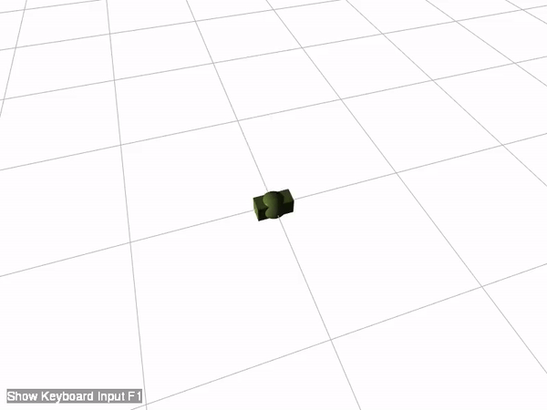
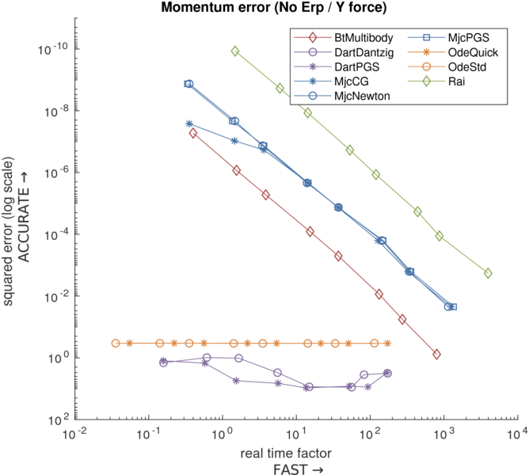
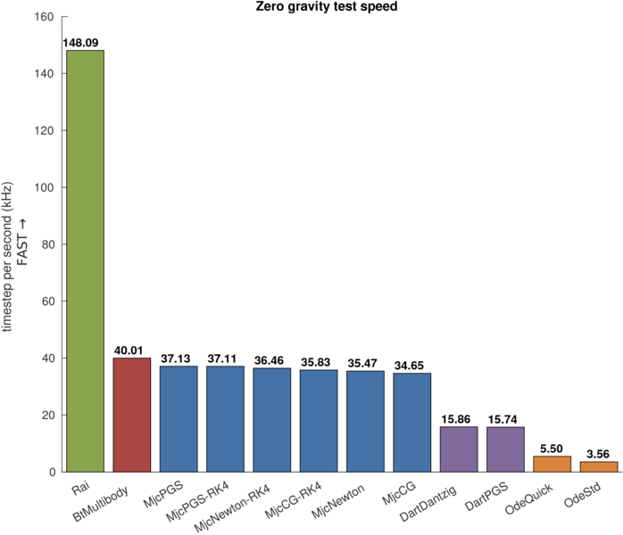

ANYmal momentum test

The test focuses on:
- Momentum conservation
Test scenario
Tested solver list
- Rai
- Bisection solver (Rai solver)
- Bullet
- Multibody solver (Featherstone implementation on Sequential impulse)
- ODE
- MuJoCo
- Dart
Results
The results of the test are as following figures.

